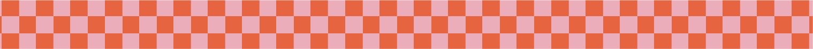
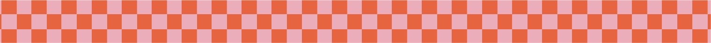

Mi carrera comenzó con una profunda fascinación por la creatividad y el diseño, lo que me llevó a estudiar Diseño Industrial en La Facultad de Aqruitectura, Diseño y Urbanismo. A lo largo de los años, he perfeccionado mis habilidades en el uso de herramientas de diseño gráfico, fotografía y edición de video lo que me ha permitido abordar una amplia variedad de proyectos con confianza y precisión.
He tenido la oportunidad de desempeñarme como Encargada de Comunicación para Thomas Trent, donde gestioné el calendario anual de la marca, dirigí campañas de moda, y produje contenido gráfico y audiovisual para diversas plataformas. Esta experiencia me permitió desarrollar una visión estratégica y una comprensión profunda de la importancia de una comunicación coherente y efectiva.
Además, mi pasión por el diseño me llevó a emprender un proyecto personal, en el cual desarrollé el branding completo de una marca, diseñé y confeccioné productos, gestioné redes sociales, y manejé la atención al público, ventas y finanzas. Este proyecto me ha enseñado la importancia de cada detalle.
Como docente de diseño gráfico, he tenido el privilegio de compartir mis conocimientos y experiencias con futuros profesionales, guiándolos en el uso de herramientas y en la comprensión de la teoría del diseño. Esta labor docente me ha permitido contribuir al desarrollo de la próxima generación de diseñadores, algo que considero sumamente gratificante.
En los últimos años, he trabajado de manera independiente, colaborando con diversas marcas y clientes en proyectos de diseño gráfico, comunicación y marketing. Esta experiencia me ha permitido desarrollar una gran capacidad de autogestión, adaptabilidad y creatividad, así como fortalecer mis habilidades en la gestión de proyectos y la atención personalizada al cliente. Trabajar de forma autónoma me ha dado la libertad de explorar nuevas ideas y enfoques, manteniéndome siempre a la vanguardia de las tendencias del diseño.
En mi tiempo libre, me encanta explorar nuevas tendencias en diseño, fotografía y tecnología. Siempre estoy buscando nuevas formas de expandir mis habilidades y conocimientos, con el objetivo de ofrecer soluciones creativas y efectivas a cada proyecto en el que me involucro.

¡Trabajemos juntos!
Hagamos tus ideas realidad.